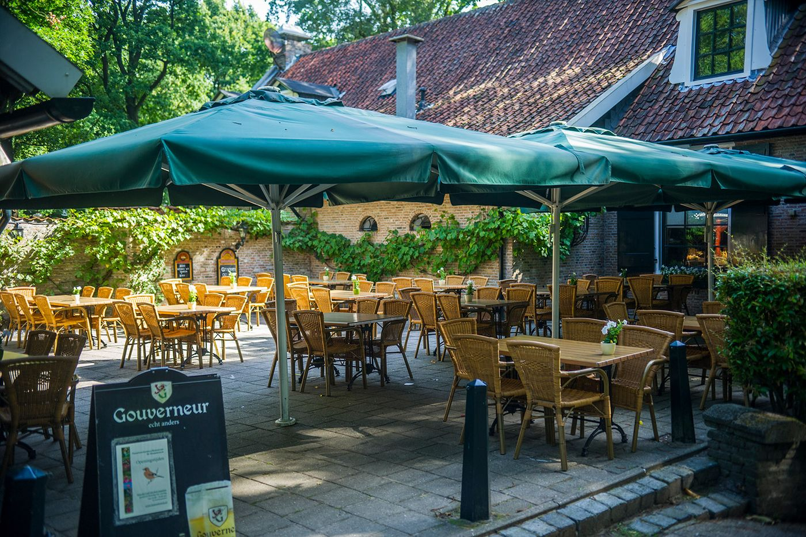
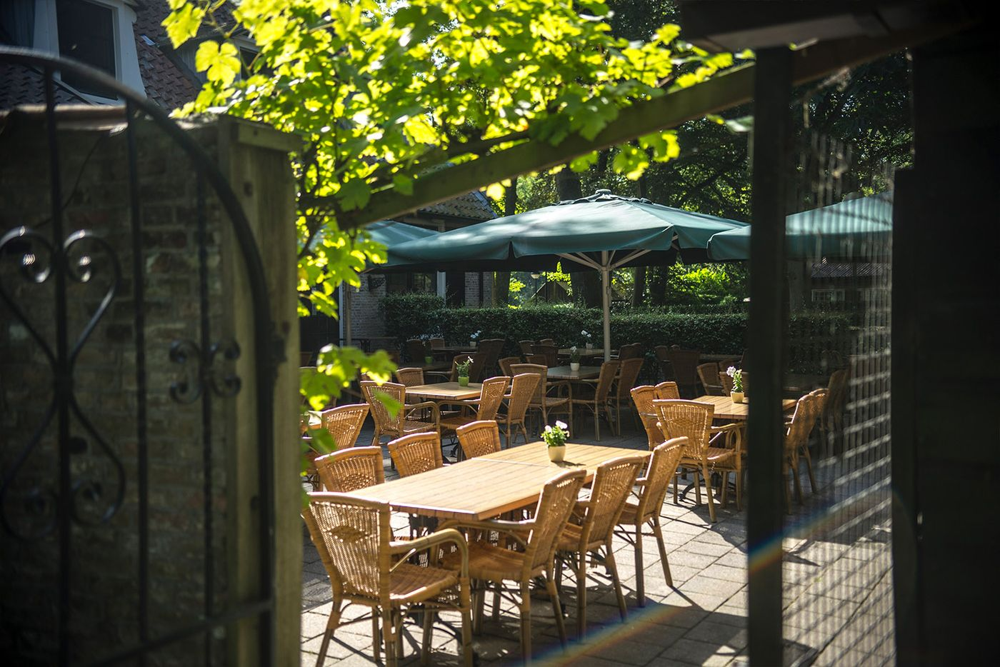
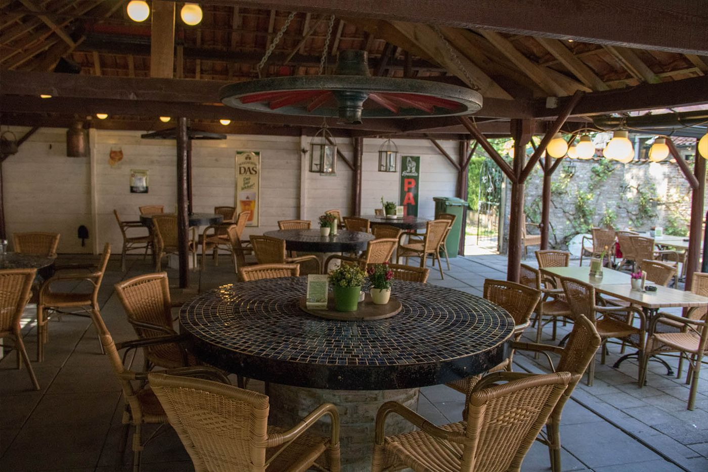
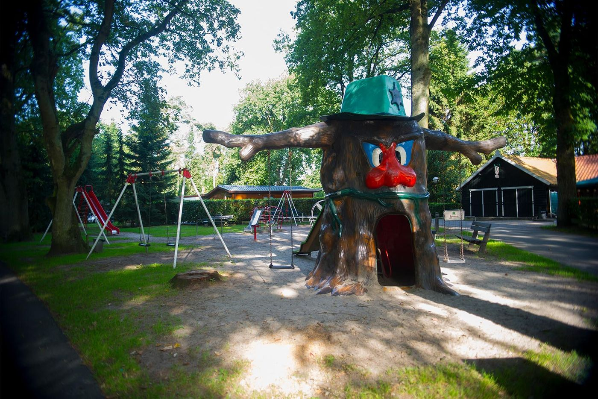
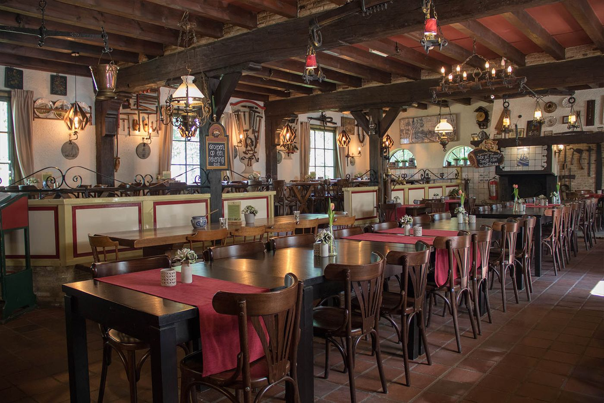
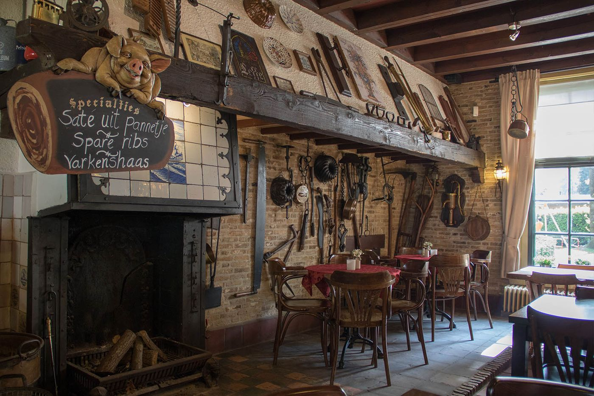
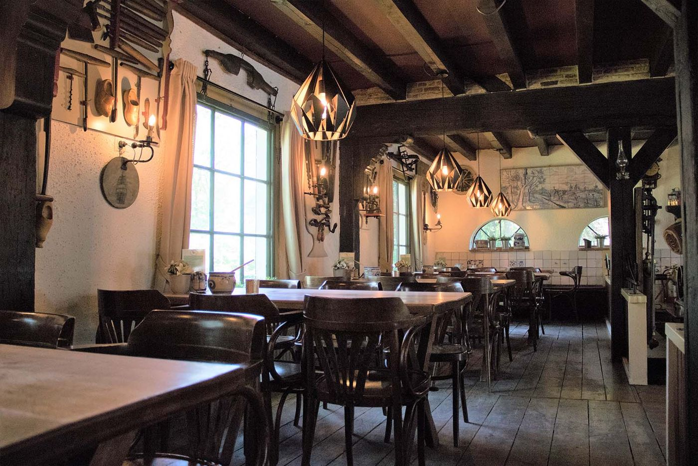
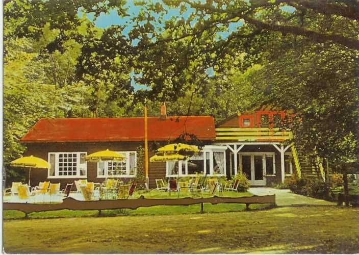

Heerlijk eten in Oud‑Brabantse sfeer
Pannekoecken en vleeschgerechten aan de rand van de Boswachterij Dorst, tussen Oosterhout, Tilburg en Breda. Met terras en speeltuin, en het speelbos naast de deur.
Terras, speeltuin en speelbos
Vanaf het terras heeft u zicht op de speeltuin, waar de kinderen zich heerlijk kunnen vermaken.

Terras
Bij mooi weer eet of drinkt u buiten, tussen het groen.

't Wagenhuys
Ons overdekte, verwarmde terras. Zo zit u ook op koelere dagen gewoon buiten.

Speeltuin
Speeltoestellen voor kleintjes en grotere kinderen, een familieschommel en natuurlijk de speelboom.
Speelbos De Heksenberg ligt direct naast De Hannebroeck. Hutten bouwen, met zand spelen, in bomen klimmen: in dit speelbos van Staatsbosbeheer mag het allemaal. En in de Boswachterij Dorst wandelt of fietst u zo verder.
Binnen bij de open haard
Ons pannekoeckenhuys is helemaal in Oud-Brabantse stijl ingericht. Met een sfeervolle open haard, en boerenwerktuigen, tegeltableaux en klokken aan de muren.
Gezellig voor een middag met het hele gezin, ook als het buiten wat minder weer is.




Over De Hannebroeck
Het pannekoeckenhuys is onderdeel van Landgoed De Hannebroeck, aan de rand van de Boswachterij Dorst. Begin jaren '70 bakten we de eerste pannekoecken in het houten huis. In die periode is ook het huidige pannekoeckenhuys gebouwd.
Onze naam komt van de Vlaamse gaai: in Brabant heet die een Hannebroek, of Broek Hannek. Met een beetje geluk ziet u hem in de Boswachterij Dorst.
Collega's gezocht voor bediening of keuken
Op zaterdag of zondag van 11.00 tot 19.30 uur. Ervaring is niet nodig, we trainen je zelf. Druk met school? Eén weekenddag per twee weken is ook prima.
Reserveren
Een tafel reserveren kan voor de zaterdag. Op zon- en feestdagen reserveren we niet: dan bent u gewoon welkom.